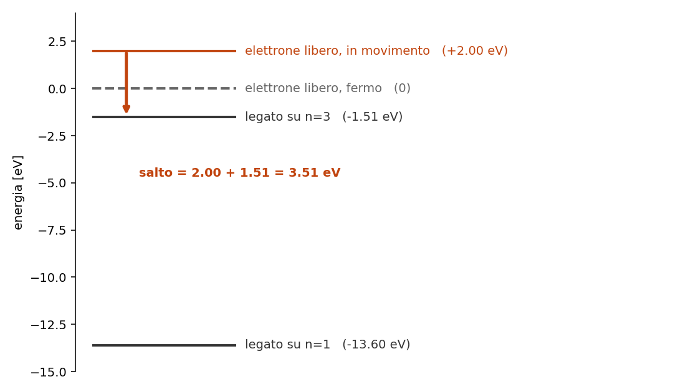

5.5 - Righe di ricombinazione otticamente sottili
Dispensa: cap. 5.5 (pag. 63-66).
Capitolo a mattoncini nella prima meta' (il fotone di cattura e' un punto in cui e'
facile incartarsi), poi si tira dritto fino al decremento di Balmer.
Nel capitolo 5 l' atomo restava intero e l' elettrone saliva di
livello. Qui succede un' altra cosa: l' atomo e' gia' ionizzato, e l' elettrone e' libero.
Poi lo riacchiappa.
Da questo processo nascono le righe piu' importanti che si osservano in una nebulosa.
1. Cosa succede, in due passi
Uno ione cattura un elettrone libero. L' elettrone atterra su un certo livello $n$, e da li'
scende a cascata verso il basso, facendo vari salti.
Un fotone viene emesso in ogni passaggio:
- nella cattura, quando l' elettrone passa da libero a legato
- in ogni gradino della discesa
SIGNIFICATO FISICO: qui si parla di ioni ed elettroni in generale, vale per qualsiasi
specie. Pero' sperimentalmente si guarda l' idrogeno, per tre motivi: compone il 90% degli atomi di
una nebulosa quindi le sue righe sono le piu' forti; ha un elettrone solo quindi i conti si fanno;
e le sue righe di ricombinazione cadono nel visibile.
2. Il fotone di cattura
Che energia ha il fotone emesso nella cattura? Per l' idrogeno:
$$h\nu = E_{cin} + \frac{13.6}{n^2}$$
$h\nu$ $\quad$ energia del fotone emesso
$E_{cin}$ $\quad$ energia cinetica che l' elettrone aveva prima di essere catturato
$\frac{13.6}{n^2}$ $\quad$ energia di legame del livello dove atterra, cioe' quanto servirebbe per
strapparlo di nuovo da li'
2.1 Perché si sommano
Perche' lo zero della scala di energia e' l' elettrone libero e fermo.
- elettrone libero che si muove: sta sopra zero, a $+E_{cin}$
- elettrone legato su $n$: sta sotto zero, a $-13.6/n^2$
Il fotone si porta via tutto il dislivello, che e' la somma dei due pezzi.

2.2 Esempio numerico
Uno ione cattura un elettrone che aveva 2 eV di energia cinetica, e l' elettrone si mette su $n=3$:
$$h\nu = 2 + \frac{13.6}{9} = 2 + 1.51 = 3.51 \; eV$$
2.3 La conseguenza: la cattura fa un continuo
$E_{cin}$ puo' valere qualsiasi cosa, perche' l' elettrone libero non ha livelli quantizzati:
puo' arrivare con la velocita' che gli pare.
Quindi il fotone di cattura puo' avere qualsiasi energia (sopra un minimo), e non fa una riga:
fa un continuo. Se ne parla nel capitolo 6.
cattura -> continuo. cascata -> righe.
Da qui in avanti ci si occupa solo della cascata.
3. Le assunzioni
Prima di scrivere l' equazione della cascata si fanno sei assunzioni. Non sono formalita': ognuna
toglie di mezzo un pezzo di fisica che in una nebulosa davvero non c'e'.
1. Non siamo in equilibrio termodinamico. Le collisioni sono troppo rare. Quindi Boltzmann non
si usa, e il bilancio va fatto a mano.
2. Si trascura l' emissione stimolata. Sarebbe: un atomo gia' eccitato viene colpito da un
fotone della sua stessa energia e ne emette un secondo identico. Serve un campo di radiazione
intenso, e qui il campo e' diluito.
3. I livelli $n>1$ non sono popolati per collisione. A $10^4$ K gli elettroni hanno 0.86 eV,
mentre per portare l' idrogeno su $n=3$ ne servono 12.1. Non ce la fanno proprio.
4. Tutti gli atomi che vengono ionizzati stavano sul fondamentale. Conseguenza della 3: se
nessuno e' eccitato, chi viene ionizzato parte per forza da $n=1$.
5. Siamo in equilibrio statistico. Le popolazioni non cambiano nel tempo: i processi atomici
sono velocissimi, la nebulosa cambia su scale di migliaia di anni.
6. Un livello $n$ si popola solo per ricombinazione diretta o come gradino di una cascata. Non
ci sono altre strade.
4. L'equazione
Con quelle assunzioni, per ogni livello $n$ si scrive:
$$(\text{quello che popola } n) = (\text{quello che spopola } n)$$
$$N_e N_p \alpha_n + \sum_{m>n}^{\infty} N_m A_{mn} = N_n \sum_{k $N_e N_p \alpha_n$ $\quad$ le ricombinazioni dirette su $n$: serve un elettrone e un protone che $\sum_{m>n} N_m A_{mn}$ $\quad$ le cascate dall' alto: tutti quelli che stanno sopra e scendono $N_n \sum_{k Guardiamo il secondo termine: per sapere quanti atomi ci sono su $n$, devo sapere quanti ce ne sono su E' un sistema infinito di equazioni accoppiate, ognuna che dipende da quelle di sopra. Chi Quindi si tronca a un $n$ massimo ragionevole e si risolve numericamente, al calcolatore. Il punto e' che il risultato di quel conto non serve rifarlo ogni volta: si fa una volta, si $$\alpha_{eff}(\text{riga}, T_e) \qquad [\text{cm}^3 \text{s}^{-1}]$$ Si legge come una funzione con due argomenti e un valore di ritorno: in ingresso: $riga$ $\quad$ quale transizione di quale ione (H$\alpha$, H$\beta$, ...) $T_e$ $\quad$ la temperatura elettronica del gas in uscita: quanti fotoni di quella riga vengono prodotti in media per ogni ricombinazione. Nota subito così de botto: tutta la complicazione del sistema infinito e' finita li' dentro. Con $\alpha_{eff}$ in mano, l' intensita' della riga e': $$I_{nm} = \alpha_{eff} \frac{h \nu_{nm}}{4\pi} \int N_e^2 \, dr$$ $h\nu_{nm}$ $\quad$ energia di un fotone di quella riga $4\pi$ $\quad$ perche' l' emissione e' isotropa, distribuita su tutto l' angolo solido $\int N_e^2 dr$ $\quad$ l' integrale lungo la linea di vista, si chiama emission measure: dice Stesso motivo del capitolo 5: per ricombinare serve che un elettrone Ed e' il motivo per cui il capitolo si intitola "otticamente sottili". Il gas e' cosi' rarefatto che $\tau \ll 1$ nelle righe: ogni fotone prodotto esce senza essere E' una semplificazione enorme, ed e' un regalo che fa la bassa densita'. Adesso il trucco che rende tutto questo utile davvero. Prendo due righe di Balmer, scrivo l' intensita' di ciascuna con la formula di sopra, e ne faccio $$\frac{I(H\alpha)}{I(H\beta)} = \frac{\nu_{H\alpha}}{\nu_{H\beta}} \frac{\alpha^{eff}_{H\alpha}}{\alpha^{eff}_{H\beta}} \approx 2.86$$ Guarda cosa e' sparito: l' angolo solido e l' emission measure. Tutta la parte geometrica, che Resta un numero che dipende solo da fisica atomica e, debolmente, da $T_e$. Si chiama decremento di Balmer, e vale 2.86 (assumendo $T_e = 10^4$ K). E' un rapporto noto in partenza, uguale per tutte le nebulose. Quindi diventa un metro se misuro $H\alpha/H\beta$ e mi viene piu' di 2.86, vuol dire che qualcosa ha attenuato E siccome $H\beta$ e' piu' blu di $H\alpha$, il colpevole e' qualcosa che assorbe piu' nel blu: Dal quanto ti scosti da 2.86 tiri fuori quanta polvere c'e'. Se ne parla nel NOTA BENE: questa struttura torna un sacco di volte nel corso, e 1. Un elettrone viene catturato su $n=3$. Il fotone che esce dipende da quanto andava veloce 2. Dalla cattura esce un continuo, dalla cascata escono righe. Cos' e' che fa la differenza? 3. L' equazione dell' equilibrio statistico non si risolve a mano. Qual e' esattamente 4. Misuri $H\alpha/H\beta = 4.1$ invece di 2.86. Cosa concludi, e come fai a essere sicuro 5. Perche' l' intensita' va come $N_e^2$ e non come $N_e$? (-> sezione 5.1) 6. In questo capitolo il trasporto radiativo del capitolo 3 non si usa
si incontrino, da cui il prodotto
su $n$
in giu'
4.1 Perché non si risolve a mano
tutti i livelli sopra. E per sapere quello, devo sapere quanti ce ne sono ancora piu' sopra.
programma lo riconosce subito: e' un loop di dipendenze che non si chiude mai.
4.2 Il risultato: $\alpha_{eff}$
tabula, e si usa. Il pacchetto che ne esce si chiama coefficiente di ricombinazione efficace:
Non e' una scorciatoia: e' che il conto e' stato fatto sul serio da qualcun altro, e il risultato e'
un numero tabulato. A te serve solo saper dire cosa ci sta dentro e cosa ne esce.
5. Dall'emissività all'intensità
quanto gas stai attraversando e quanto e' denso
5.1 Perché $N_e^2$
e un protone si incontrino. Due densita' che si moltiplicano, quindi il quadrato.
5.2 Perché qui non serve il trasporto radiativo
riassorbito. Quindi non serve risolvere l' equazione del trasporto del
capitolo 3: quello che viene emesso e' esattamente quello che osservi.
6. Il decremento di Balmer
il rapporto:
dipendeva da quanto e' grande la nebulosa, da quanto e' densa e da quanto e' lontana, si
semplifica.
6.1 A cosa serve
campione:
$H\beta$ piu' di $H\alpha$.
la polvere interstellare. Il gas e' arrossato.
capitolo 5.6.
conviene riconoscerla subito perche' ritorna: fai il rapporto fra due righe e la geometria se ne
va. Quello che resta dipende solo dalla fisica, quindi diventa uno strumento di misura. Lo stesso
identico trucco fa funzionare i diagnostici di [O III] e [S II] nel
capitolo 5.7.
7. In breve
numericamente
di piu' c'e' polvere
Domande tattiche
l' elettrone? E il livello su cui atterra, dipende dalla sua velocita'? Sono due domande diverse.
(-> sezioni 2 e 2.1)
(-> sezione 2.3)
l' ostacolo? (-> sezione 4.1)
che non dipenda dal fatto che quella nebulosa e' piu' grande o piu' vicina? (-> sezioni 6 e 6.1)
mai. Come mai possiamo permettercelo? (-> sezione 5.2)